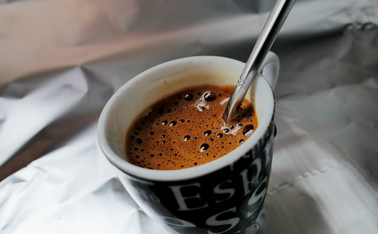
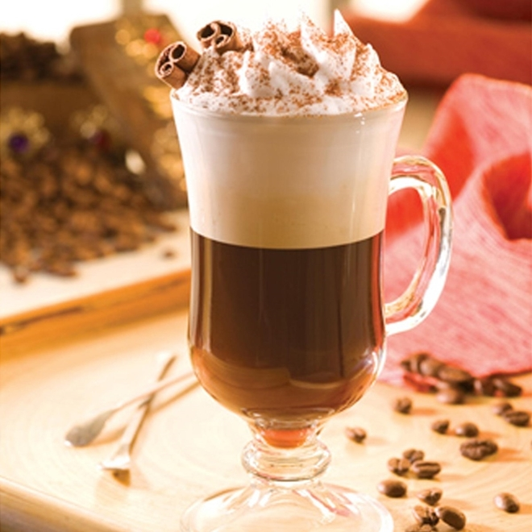
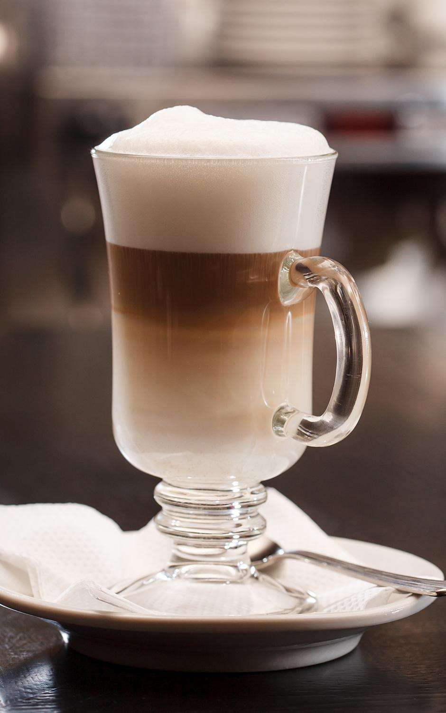
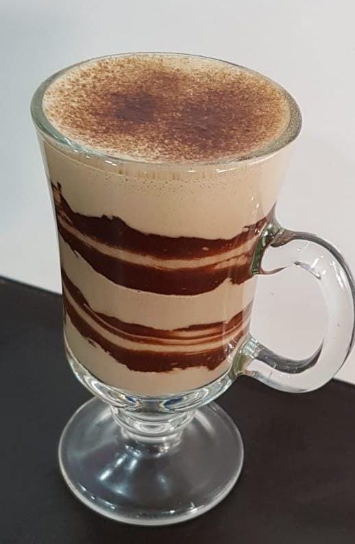

 Café espressoO espresso, receita tradicional, é o café puro e feito sob pressão, sem adição de leite ou qualquer outro ingrediente. Quando bem feito, ele apresenta duas camadas: a bebida e seu creme (espuma). 7.99 CappuccinoO cappuccino é uma deliciosa invenção italiana, que mistura o café espresso com leite vaporizado, resultando em um creme bem consistente. 15.00  Irish coffeeReceita criada na Irlanda, o Irish coffee leva, além do café, o tradicional uísque irlandês e uma camada de creme. 12.50  Caffè latteO caffè latte também tem origem italiana e nada mais é do que o café com leite, também conhecido como pingado em algumas regiões do Brasil. 9.95 Café macchiatoO macchiato é uma versão adocicada do espresso com uma “macchia di latte” (mancha de leite) vaporizada, que traz cremosidade e valoriza os açúcares da bebida. 19.99  Café mochaO mocha ou mocaccino é para os fãs de chocolate, já que é feito com café espresso, leite vaporizado, espuma de leite e calda de chocolate. 5.99